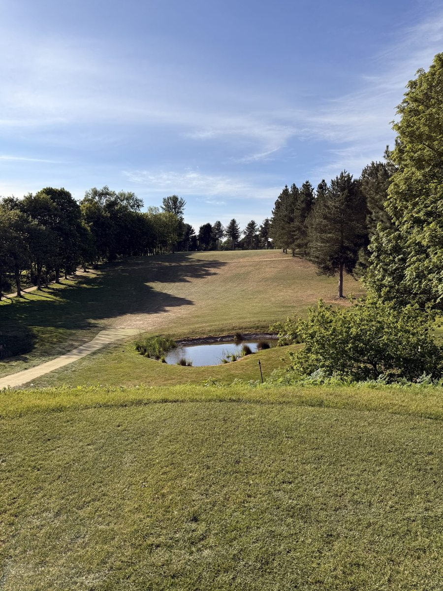

Norwich is one of England’s best-kept golfing secrets — a handsome medieval city with a cathedral, cobbled lanes and a food scene well above its size, ringed by more quality golf than most visitors expect. Within a short drive of the centre you’ll find a Royal championship course, one of Norfolk’s oldest and most characterful parkland clubs, 36-hole country-house resorts, and welcoming members’ clubs that take visitors — and the famous clifftop links of the North Norfolk coast are barely forty minutes north. Whether you want a round in the city or a well-placed base for touring the county, here are the best golf courses near Norwich.
The golf courses near Norwich, at a glance
There are more than a dozen golf clubs within half an hour of the city. These are the ones we’d send a visiting golfer to first:
- Royal Norwich — Royal championship parkland · about 8 miles northwest
- Eaton — historic parkland almost in the city · about 2 miles from the centre
- Barnham Broom — 36 holes with hotel & spa · about 10 miles west
- Bawburgh — parkland with lodges & driving range · about 4 miles west
- Costessey Park — welcoming parkland on the city edge · about 4 miles west
- Dunston Hall — Elizabethan hotel, spa & golf · about 5 miles south
- Sprowston Manor — Marriott hotel & course · about 4 miles northeast
Royal Norwich Golf Club
Signature · Championship Parkland · ~8 miles northwest
Royal Norwich is the flagship course in the Norwich area — and one of the newest great courses in England. In 2019 the club made a bold move, relocating from its old city-edge home to a spectacular new layout at Weston Longville, designed by Ross McMurray of European Golf Design and officially opened by Ian Poulter. Stretching to over 7,200 yards from the tips, it runs over easy-walking turf between magnificent mature trees, built to be enjoyed by golfers of every standard while holding the potential to stage a top-level tournament.
The club carries Royal patronage, and the investment shows everywhere: a state-of-the-art clubhouse, excellent practice facilities, and — a nice touch — its own micro-brewery. For a visiting golfer who wants a round at a course with genuine prestige and quality throughout, Royal Norwich is the natural anchor for any Norwich golf itinerary.
Eaton Golf Club
Historic Parkland · ~2 miles from the city centre
If Royal Norwich is the modern showpiece, Eaton is the characterful old soul — founded in 1910 and one of the oldest golf clubs in Norfolk. Set just south of the city centre and often described as a “golfing oasis within the city,” it’s a mature parkland course laid out in part by J.H. Taylor, the four-time Open champion. It’s a genuine hidden gem: close enough to walk into the Lanes for dinner afterwards, yet a proper, well-established test that rewards accurate golf over brute force. For anyone who values history and charm, Eaton is a must on a Norwich trip.
Barnham Broom Golf & Country Club
36 Holes · Hotel & Spa · ~10 miles west
About ten miles west of Norwich, Barnham Broom is the area’s premier stay-and-play resort — 36 holes across two contrasting courses, the Valley and the Hill, wrapped around a hotel, restaurant, spa and fitness centre in the Norfolk countryside. Non-members are welcome, and the two-course variety plus full hotel facilities make it ideal for a group that wants everything in one place: play a different course each day, dine and unwind on site, no driving between venues. It’s one of the finest golf hotels near Norwich and a natural base for a self-contained golf break.
Bawburgh Golf Club

Parkland · Lodges & Range · ~4 miles west
Bawburgh sits just west of Norwich in undulating parkland with views across the Yare Valley — easy to reach from the city, unhurried in atmosphere, and with a course that rewards proper golf rather than a hitting session. We played it recently and came away genuinely impressed: good variety across the holes, well-kept greens, and a club that takes its golf seriously without being stuffy about it.
The on-site lodges make Bawburgh a clean, self-contained stay-and-play option, particularly for smaller groups who want flexibility and their own space, and the proper driving range makes it a useful base for groups where sharpening the game is part of the trip.
Costessey Park Golf Club
Parkland · ~4 miles west
On the western edge of the city, Costessey Park is an 18-hole, par-71 parkland course set across roughly 125 acres of pretty countryside on a former estate. It’s an unpretentious, good-value club that welcomes visitors warmly — the sort of relaxed round that rounds out a Norwich golfing day nicely, and an easy pairing with Bawburgh just up the road.
Dunston Hall Hotel & Golf
Elizabethan Hotel & Golf · ~5 miles south
Just south of Norwich, Dunston Hall is a Grade-listed Elizabethan manor operating as a hotel and golf venue, with an 18-hole parkland course set within the estate’s wooded grounds. Hotel, golf, spa and restaurant in one location make it a strong choice for groups who want everything on site without driving between venues, and the Bunkers Bar terrace is a fine spot for post-round drinks overlooking the course. For groups who prioritise convenience and the full-service hotel experience, Dunston Hall delivers reliably.
Sprowston Manor Hotel & Country Club
Marriott Hotel & Course · ~4 miles northeast
A Marriott-managed country-house hotel just north of the city, Sprowston Manor pairs an 18-hole parkland course (once host to the EuroPro Tour) with the full facilities of a four-star hotel — spa, pool and several places to eat. Its position between the city centre and the north Norfolk coast makes it a comfortable, well-connected base for combining Norwich golf with the coastal links further north. It’s the most hotel-forward option on this list, and the easy choice for groups who prize accommodation quality and a familiar brand.
Golf in the city, links on the coast
Here’s the quiet advantage of Norwich: you’re never far from very different golf. The parkland and country-house courses around the city are ideal for relaxed, sociable rounds — but the moment you fancy something more dramatic, the clifftop links of the North Norfolk coast are only about forty minutes north. Royal Cromer and Sheringham perch high above the North Sea, and the Breckland heathland of Thetford lies a similar distance to the southwest. Base yourself in or near Norwich and you can mix city parkland, country-house resorts and world-class coastal links across a single long weekend.
Planning a golf break near Norwich
Norwich works beautifully as the opening or closing chapter of a wider Norfolk golf trip. Norwich Airport connects to Amsterdam and onward across Europe, and two nights in or near the city — a round or two here, then north to the coast — is a routing that makes real sense. Our curated itineraries build exactly this kind of trip, and if you’d like it self-contained, our guide to the best stay-and-play near Norwich and our three-day Norfolk blueprint show how it comes together.
This is what we do: tell us your dates and group size and we’ll handle the tee times, the accommodation and the running order, so you simply turn up and play.
Golf near Norwich: common questions
How many golf courses are there near Norwich?
More than a dozen golf clubs sit within about half an hour of the city, ranging from the Royal championship course at Weston Longville to friendly parkland members’ clubs and 36-hole country-house resorts. Seven or eight of them are genuinely worth a visiting golfer’s time — the ones listed above.
What is the best golf course near Norwich?
For sheer quality and prestige, Royal Norwich’s modern Ross McMurray design is the standout championship course. For history and character, Eaton — founded in 1910 and partly designed by Open champion J.H. Taylor — is the connoisseur’s pick. Which is “best” depends on what you’re after: a big-ticket round, or a charming old parkland gem.
Can you play golf and stay near Norwich?
Yes — several venues combine golf and accommodation. Barnham Broom (36 holes, hotel and spa), Dunston Hall and Sprowston Manor are full-service golf hotels, while Bawburgh offers self-contained lodges beside the course. Any of them works as a base, or we can pair a city hotel with the surrounding courses.
Do the courses near Norwich welcome visitors and non-members?
Most do. Barnham Broom, Bawburgh, Costessey Park, Dunston Hall and Sprowston Manor all welcome visiting golfers, and we arrange access and tee times as part of any trip we plan.
How far is the North Norfolk coast from Norwich?
About forty minutes by car. The clifftop links at Royal Cromer and Sheringham are an easy day trip or an overnight leg from a Norwich base — which is exactly why the city makes such a good starting point for a Norfolk golf tour.
Plan your Norwich golf break
Tell us your dates and group size — we’ll build the right Norwich golf itinerary, or fold it into a wider Norfolk trip taking in the coast.
Start your enquiry